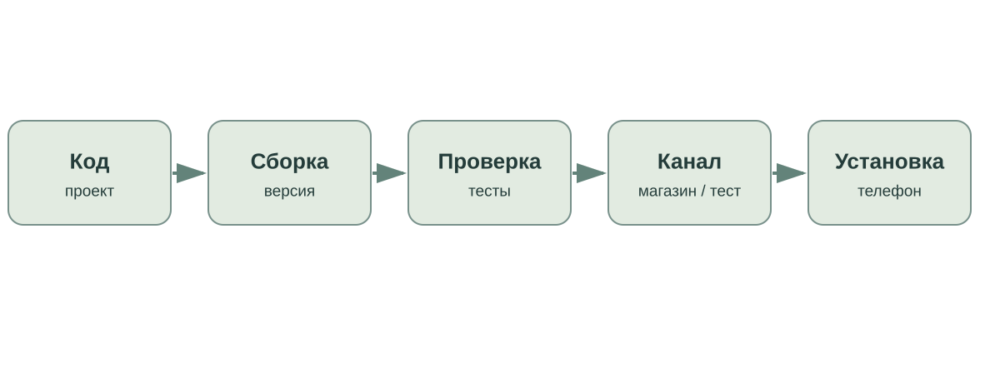
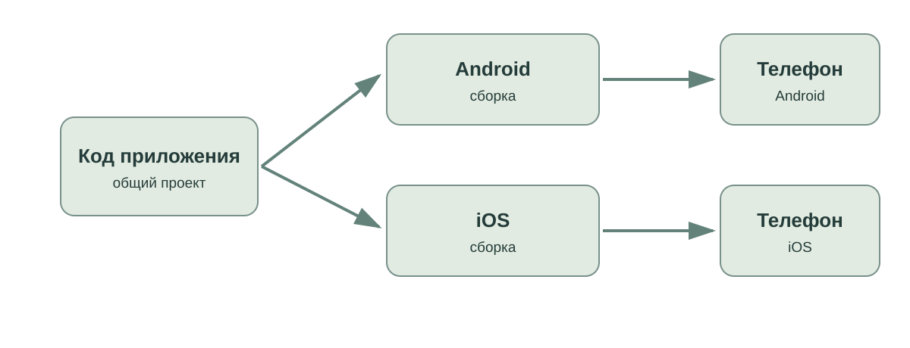
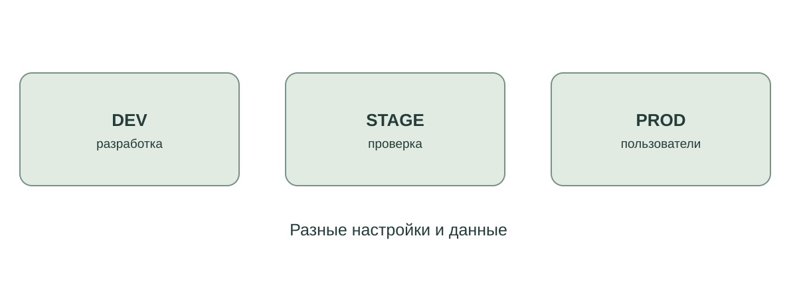
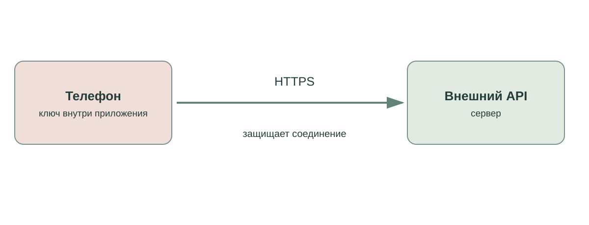
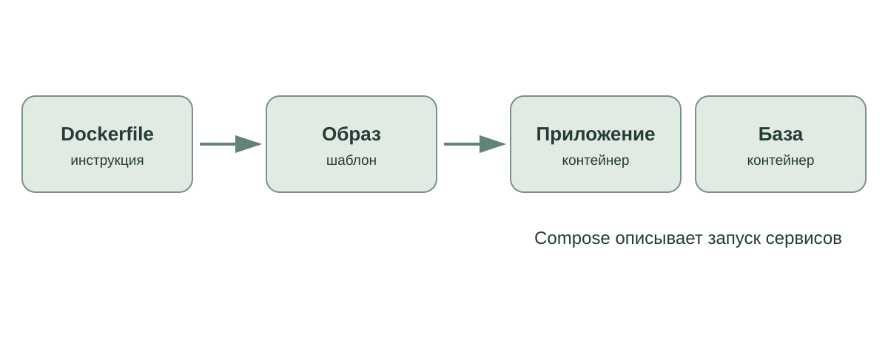
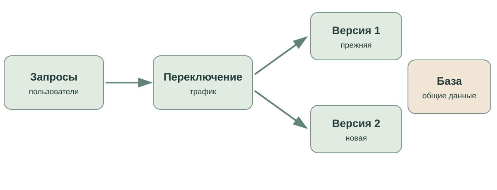
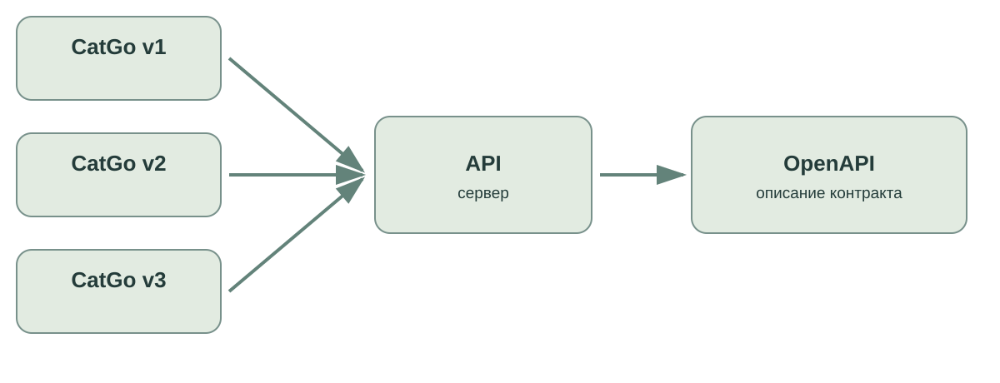
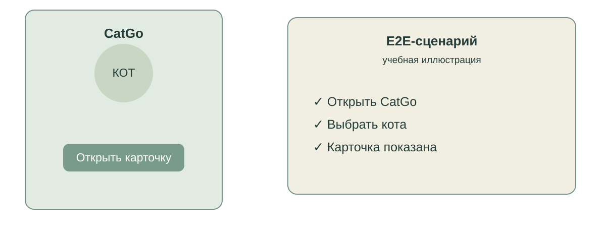
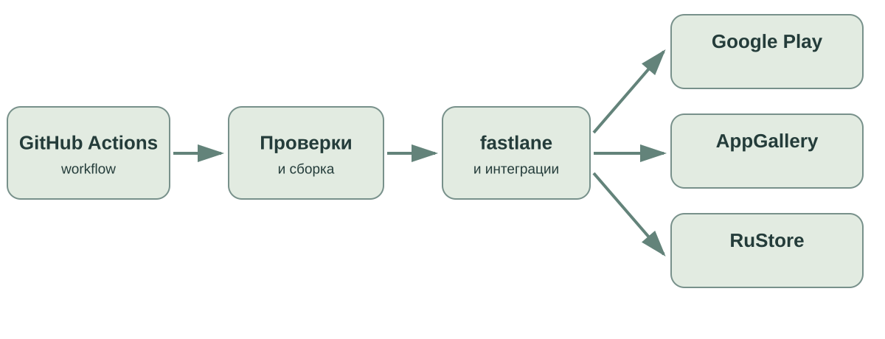

«У меня работает на телефоне!»
Как приложение попадает к пользователям и меняется после выпуска?
Как приложение попадает к пользователям и меняется после выпуска?


Что происходит между кодом и телефоном пользователя?

Для платформ могут понадобиться разные инструменты и сборки.
Сборка → проверка → публикация → установка
На каком этапе пользователь получает обновление?
Пользователь добавил кота, но фотография не загрузилась.
Что произошло?
Сервер: исправить найденную ошибку.
Приложение: понятнее сообщать о сбое.
Два изменения — два пути выпуска.
воспроизвели ошибку
→ добавили проверку
→ исправили код
→ запустили тестыЗелёный тест означает, что проверенный сценарий прошёл.

Разные цели, настройки и данные.
DEV API_URL = адрес тестового API
PROD API_URL = адрес рабочего API.env — один из способов задать настройки.

Даже если используется HTTPS?
| Данные | Где и зачем |
|---|---|
| Общий секрет сервиса | На доверенной серверной стороне |
| Токен пользователя | В защищённом хранилище устройства |
| Passkey | Закрытый ключ использует платформа |
Другая версия среды. Не хватает библиотеки.
Как описать способ запуска вместе с проектом?

Файлы можно хранить и изменять вместе с проектом.
Подготовили версию → запустили → направили запросы → проверили
Новая версия стала доступна в нужном окружении.
| Изменение | Пример |
|---|---|
| Миграция | Добавили поле в таблицу |
| Обновление данных | Заполнили поле для существующих записей |
Старый и новый код могут работать одновременно.

Переключение кода не отменяет изменения данных.
Пользователи сталкиваются со сбоем.
Исправление подготовлено.
Что нужно узнать перед решением?

OpenAPI описывает контракт. Swagger UI помогает его изучать.
| Предложить | Потребовать — force update |
|---|---|
| Можно продолжить со старой версией | Работа ограничена до обновления |
Что будет, если человек не может обновиться сейчас?
Тесты → сборка → подпись → передача тестировщикам
Какие действия можно автоматизировать?

Учебный макет · не результат реального запуска

Загрузка сборки ≠ публикация ≠ установка пользователем.
Проверяем ключевой сценарий.
Смотрим на ошибки и слушаем пользователей.
Как найти причину, если фото всё ещё не загружается?